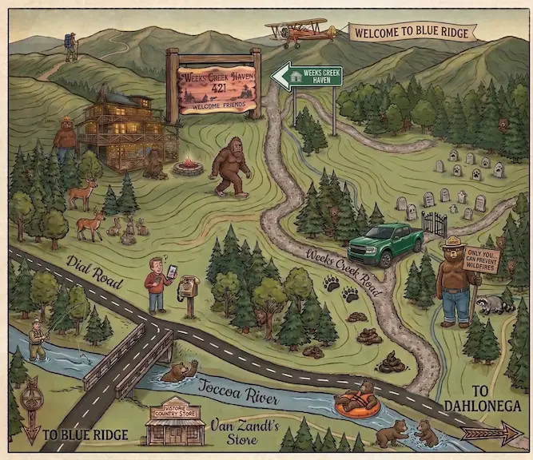
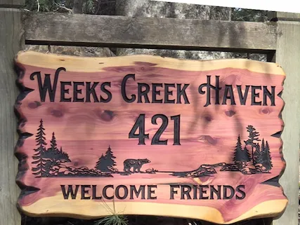
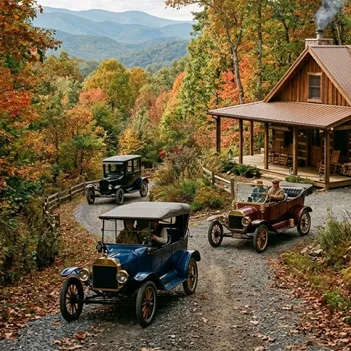
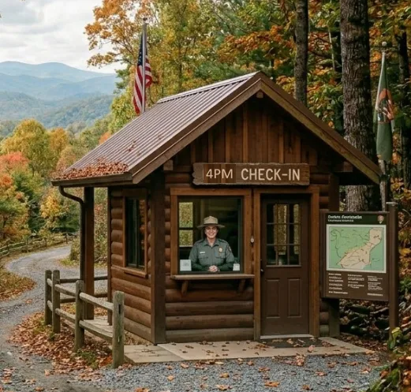
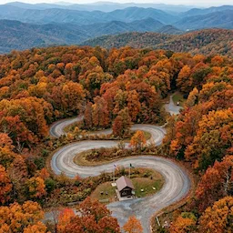

Your Destination
421 Weeks Creek Rd
Blue Ridge, GA 30513
Getting Here
Mountain GPS is hit-or-miss. These landmarks will keep you on track.
Start in Downtown Blue Ridge
Load your GPS before you leave town — cell service fades as you head into the Aska Adventure Area. Stock up on anything you need while you're here or you get lost for a couple of days.
Head South on Aska Road
Find and follow Aska Rd south out of Blue Ridge. Just past Ace Hardware. The road winds through beautiful mountain scenery — stay on it for several miles until it comes to a 'T' in the road.
Turn left onto Dial Road
You'll see Van Zandt's Store — a small country store and grill — on the right.
Cross the Toccoa River
A small bridge crosses the Toccoa River. At the 'T' intersection, turn right. Shortly after, turn left onto Weeks Creek Rd and follow it into the holler.
Stay Left at the Fork — Look for the Sign
When the road splits, stay left. Watch for our cedar "Welcome Friends" sign on the left — that's your driveway. You made it!

Local area map — (tap to enlarge)
📱 No Cell Service Pro-Tip
Signal drops significantly once you enter the Aska Adventure Area. Load your GPS while still in downtown Blue Ridge. Once you arrive, our High-Speed Fiber Wi-Fi will get you back online instantly.
Interactive Map
Arrival Tips
A few things to know before you pull in

The Driveway
The driveway is marked by a cedar "Welcome Friends" sign. When the road forks — stay left. You'll feel the gravel under your wheels — you're almost there!

Parking
There's plenty of flat parking - 3 or 4 cars - right at the cabin. Pull in and get settled.

Check-In Time
Check-in begins at 4:00 PM. If you're arriving early, Blue Ridge has great restaurants, shops, and the Toccoa River to explore while you wait.

The Drive
Mountain roads are narrow and winding. Take your time — you're on vacation! The scenery is worth every curve, and the creek sounds waiting for you make it all worthwhile.